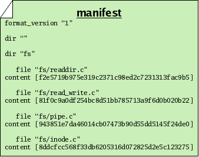
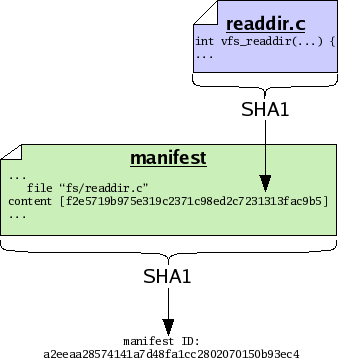

Next: Historical records, Previous: Versions of files, Up: Concepts [Contents][Index]
After you have made many different files, you may wish to capture a “snapshot” of the versions of all the files in a particular collection. Since files are typically collected into trees in a file system, we say that you want to capture a version of your tree. Doing so will permit you to undo changes to multiple files at once, or send your friend a set of changes to many files at once.
To make a snapshot of a tree, we begin by writing a special file called a manifest. In fact, monotone will write this file for us, but we could write it ourselves too. It is just a plain text file, in a structured but human-readable format used by several parts of monotone. Each file entry of a manifest binds a specific name, as a full path from the root of the workspace, to a specific file ID, as the hash of its content. In this way, the manifest collects together the snapshot of the file names and contents you have at this point in time; other snapshots with other manifests can use different names for the same file, or different contents for the same name.
Other entries in the manifest format name directories or store file attributes, which we will cover later.

Now we note that a manifest is itself a file. Therefore a manifest can serve as input to the SHA1 function, and thus every manifest has an ID of its own. By calculating the SHA1 value of a manifest, we capture the state of our tree in a single manifest ID. In other words, the ID of the manifest essentially captures all the IDs and file names of every file in our tree, combined. So we may treat manifests and their IDs as snapshots of a tree of files, though lacking the actual contents of the files themselves.

As with versions of files, we may decide to store manifests in their entirety, or else we may store only a compact description of changes which occur between different versions of manifests. As with files, when possible monotone stores compact descriptions of changes between manifests; when necessary it stores complete versions of manifests.
Next: Historical records, Previous: Versions of files, Up: Concepts [Contents][Index]